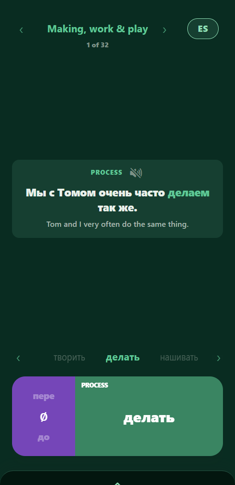
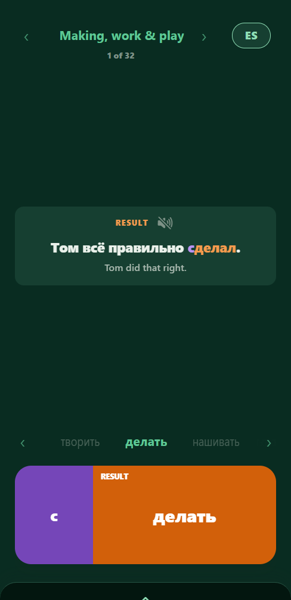
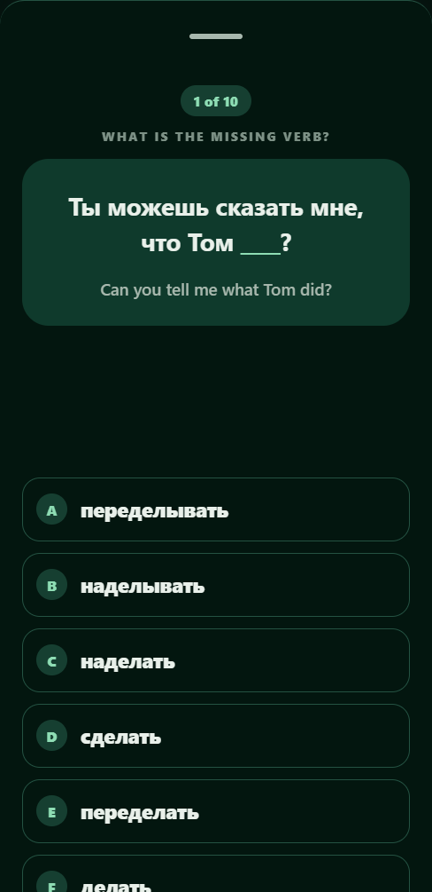

Russian verbs, from the root up.
Stop memorizing Russian verbs as isolated words. Build them from parts, compare aspect partners, and learn how prefixes reshape meaning in real sentences.
-

Read a real sentence. The verb you are studying is marked in it. -

Flip the card. The sentence changes to the perfective result. -

Quiz the family: the missing verb, from the prefixes you just saw.